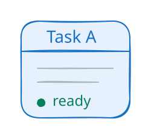
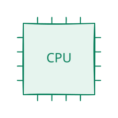
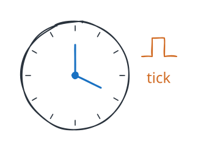

继续画，选 Excalidraw
复制后，到 Excalidraw 画布按 Ctrl / ⌘ + V。框、线和文字都能接着改。
任务、队列、CPU，还有那些不好画的概念。
24 个手绘组件，挑一个，直接拿走。

一个任务
一颗 CPU
一点控制
一些时间独立组件，随你组合
试试短一点的关键词，或切回全部组件。
复制后，到 Excalidraw 画布按 Ctrl / ⌘ + V。框、线和文字都能接着改。
适合笔记、课件和文章。若浏览器不支持复制 SVG 图像，会为你复制 SVG 源码。
复制图片，粘到你正在写的地方。不支持图片复制时，也可以直接下载。